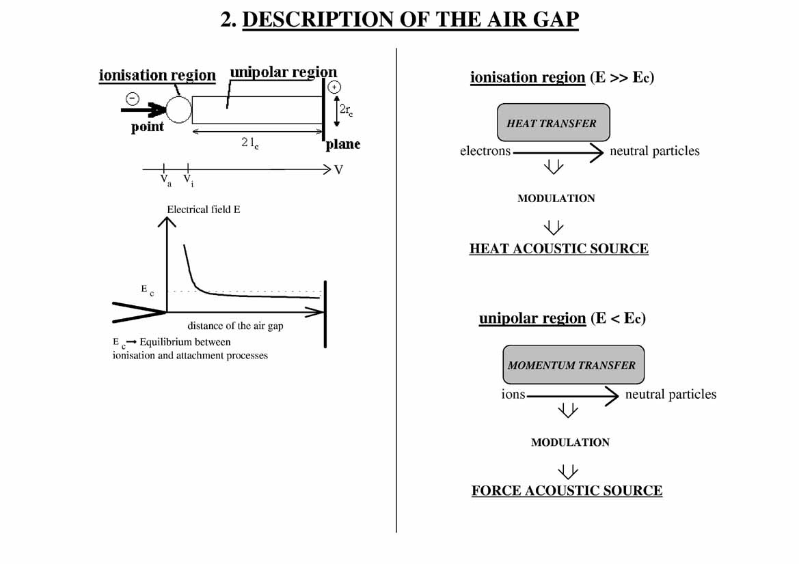
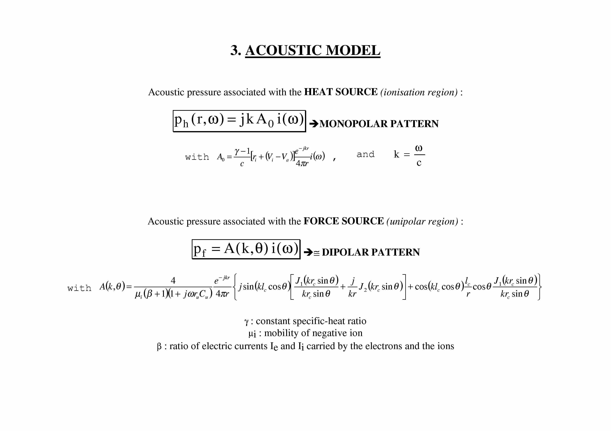
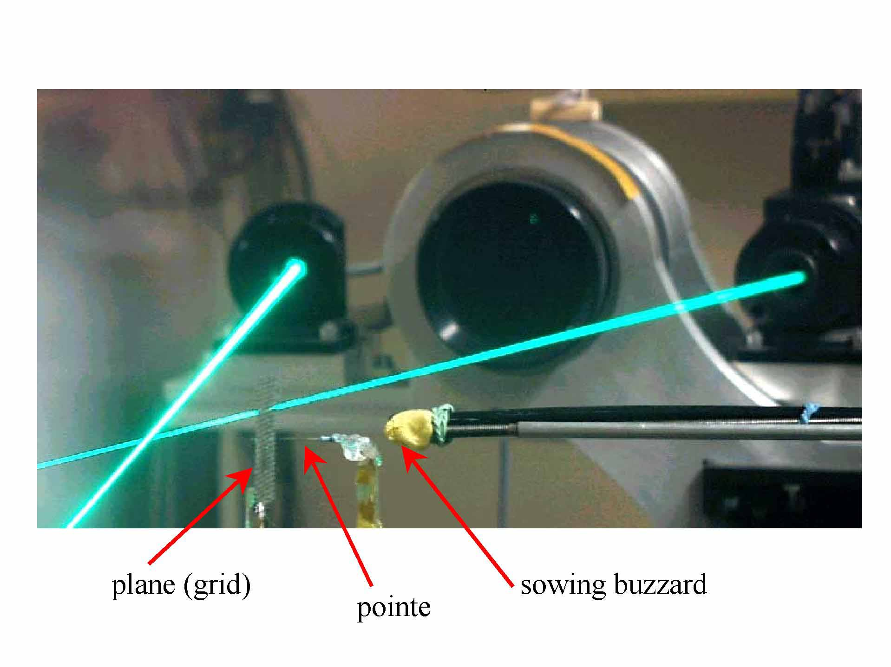

Characterization of acoustic sources associated with negative corona discharges
Caractérisation des sources acoustiques associées aux décharges couronne négatives
Laboratoire d'Acoustique de l'Université du Maine (LAUM)
Le Mans, FRANCE
From Mechanical to Direct Transduction
De la transduction mécanique à la transduction directe
Classical electroacoustic transducers (electrostatic, piezoelectric, etc.) create acoustic waves through mechanical vibrations acting on air molecules. However, these systems face limitations: mass of moving parts, diaphragm inertia, and mechanical failure. "Plasma" loudspeakers, having no membrane at all, represent an "ultimate" solution.
Les transducteurs électroacoustiques classiques (électrostatiques, piézoélectriques, etc.) créent l'onde acoustique par la vibration d'une pièce mécanique. Cependant, ces systèmes rencontrent des limites : masse des parties mobiles, inertie du diaphragme et usure mécanique. Le haut-parleur à "Plasma", dépourvu de toute membrane, apparaît comme une solution ultime.

Gas discharge transducers offer "direct transduction" (no moving parts) and a "volumic" source character. Their small size allows for use in confined or harsh environments, such as high-temperature mediums.
La technologie des décharges gazeuses permet une "transduction directe" (sans pièce mobile) et un caractère "volumique" de la source. Leur petite taille permet une utilisation en milieux confinés ou hostiles (hautes températures).
Physical Mechanisms: Heat and Momentum
Mécanismes physiques : Chaleur et Quantité de mouvement
Air ionization is obtained by applying high DC voltage between electrodes (e.g., a needle facing a plane). Depending on the configuration, interactions lead to two predominant phenomena:
1. Joule Heat Source: Predominant in the "ionization region" (isotropic transfer).
2. Electric Wind: Momentum transfer in the "drift region" creating a directional gas flow.
L'ionisation de l'air est obtenue par une haute tension continue entre électrodes (pointe-plan). Selon la configuration, les interactions mènent à deux phénomènes prédominants :
1. Source de chaleur Joule : Prédominante dans la "zone d'ionisation" (transfert isotrope).
2. Vent électrique : Transfert de quantité de mouvement dans la "zone de dérive" créant un flux directionnel.

> Electrode Gap / Espace inter-électrodes
> Acoustic Model / Modèle acoustiqueResearch Contributions & Methodology
Contributions de recherche et méthodologie
This PhD improved electroacoustic efficiency by optimizing transducer configurations. A key contribution was modeling the drift region as a truncated conical region, matching visual discharge observations.
Cette thèse a permis d'améliorer le rendement électroacoustique en optimisant la configuration du transducteur. Une contribution clé fut la modélisation de la zone de dérive comme une zone conique tronquée, en accord avec les observations visuelles.
We also utilized Laser Doppler Anemometry (LDA) to characterize the "electric wind" and acoustical velocity. Unlike microphones, this optical method is insensitive to nuisance electromagnetic radiation.
Nous avons également utilisé l'Anémométrie Laser Doppler (LDA) pour caractériser le vent électrique et la vitesse acoustique. Contrairement aux microphones, cette méthode optique est insensible aux perturbations électromagnétiques.

> Laser Doppler Anemometry / Mesures LDA